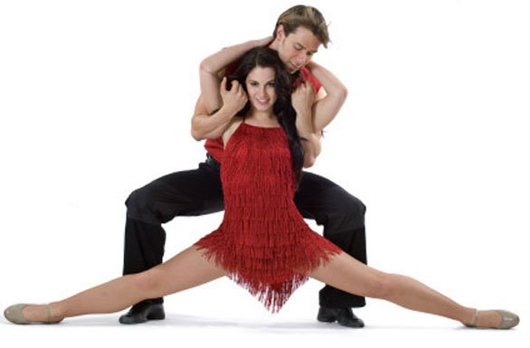

Bachata - meilės šokis
Bachata - Dominikos Respublikos muzikinis stilius ir šokis, plačiai paplitęs Lotynų Amerikos ir Karibų baseino šalyse, taip pat tose JAV lotynų amerikiečių bendruomenėse, kuriose dominuoja išeiviai iš šių šalių. Muzika pasižymi vidutiniu tempu, dainų tekstai pasakoja apie meilės be atsako kančias ir apie gyvenimo negandas. Tačiau gyvenimas kupinas paradoksų – meilės be atsako šokis dažnai padeda dviems žmonėms atrasti tikrą meilę.

Bachata atsiradimas siejamas su įtempta socialine padėtimi, kuri susidarė Dominikos Respublikoje 6-tojo XX amžiaus dešimtmečio pradžioje, nuvertus diktatorių Rafaelį Leonidą Truchiljo Moliną (Rafael Leónidas Trujillo Molina). Tačiau atskiri tyrinėtojai tvirtina, kad egzistuoja šaltiniai, minintys bachata ir anksčiau - 1922 ir 1927 metais.
Anuo metu bačata arba kumbančata (isp. bachata, cumbanchata) vadino triukšmingus varguomenės vakarėlius. Šie neturtingųjų susiėjimai buvo rengiami kur pakliuvo - vidiniuose namų kiemeliuose arba medžių pavėsyje tiesiog gatvėse. Tokių sueigų-bačatų muzika buvo laikoma vulgaria žemutinių sluoksnių išdava, vargingųjų kvartalų dainomis, pasakojančiomis apie varguolių problemas, nelaimingą meilę ir kitas gyvenimo negandas. Būtent dėl to bachata vadina música de amargue - skausmo (vargo) muzika.
Ilgą laiką Dominikos Respublikoje egzistavo nerašytas bachata, kaip "žemo žanro" draudimas: šio stiliaus muzika nebuvo grojama diskotekose ir nebuvo transliuojama per radiją, įrašai nebuvo pardavinėjami muzikos įrašų parduotuvėse.
Persilaužimu bachata istorijoje tapo aštuntas XX amžiaus dešimtmetis. Iki tol bachata grodavo tik vadinamosios "alternatyviosios muzikos" atlikėjai, kurie dainavo šias liūdnas dainas kaip savotišką emocinės iškrovos priemonę naktinėse vakaronėse. Laikui bėgant muzikantai suprato, kad bachata puikiai tinka tokių jausmų, kaip nostalgija, melancholija ir ilgesys perteikimui ir ėmė plačiau naudoti šią jos ekspresyviąją pusę.
